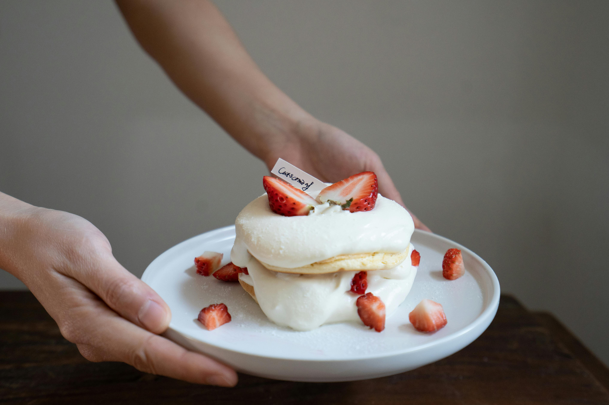
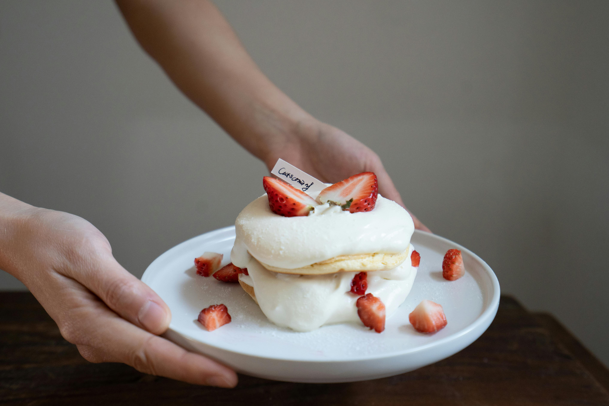
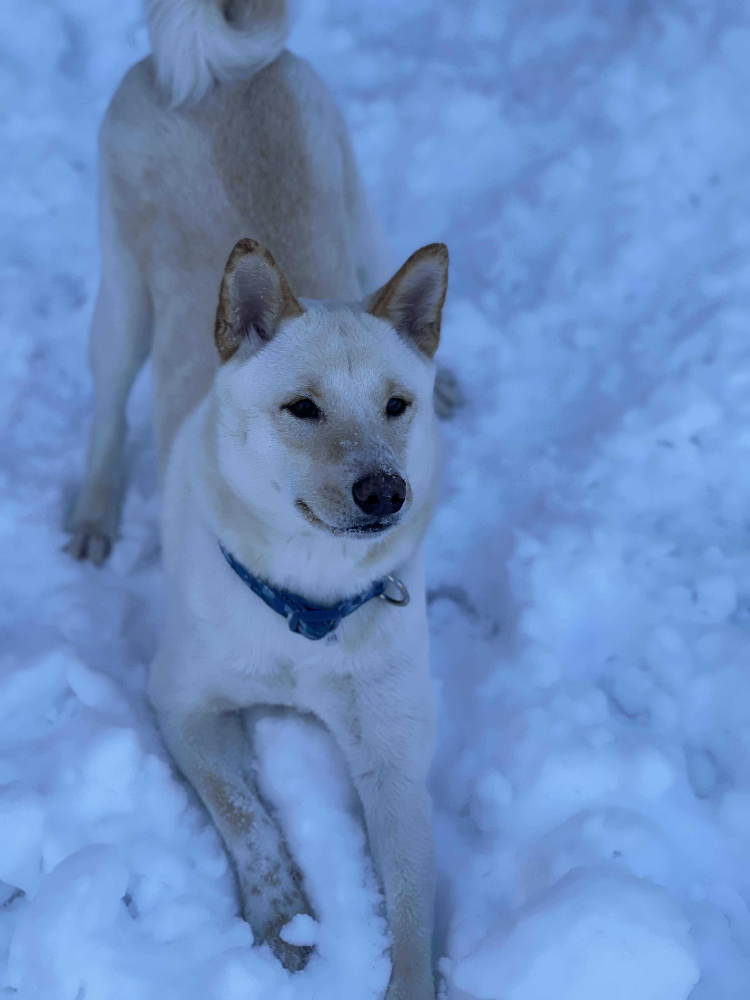

Hi! I'm Tuchau and I am a senior at Fordham.
I absolutely despise cooking.
The oil splatters when trying to sustain myself is terrifying to be honest.
But I LOVE to bake! I've made strawberry shortcakes, crepe cakes, and cheesecakes.
 

Maybe not ones as fancy as these photos... but I can make a decent pastry.
I have a Shiba Inu named Lucky!
He's a little smaller than traditional Shibas because he's actually a Kishu!

He's a sassy boy who loves the snow.
As a theatre nerd, I hope ot one day open a Broadway themed study cafe.